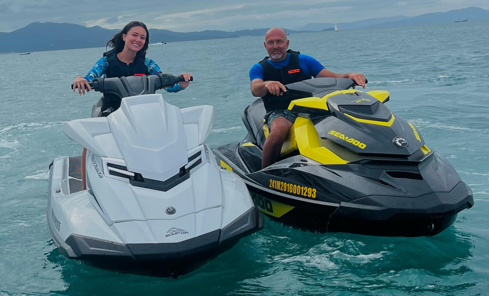
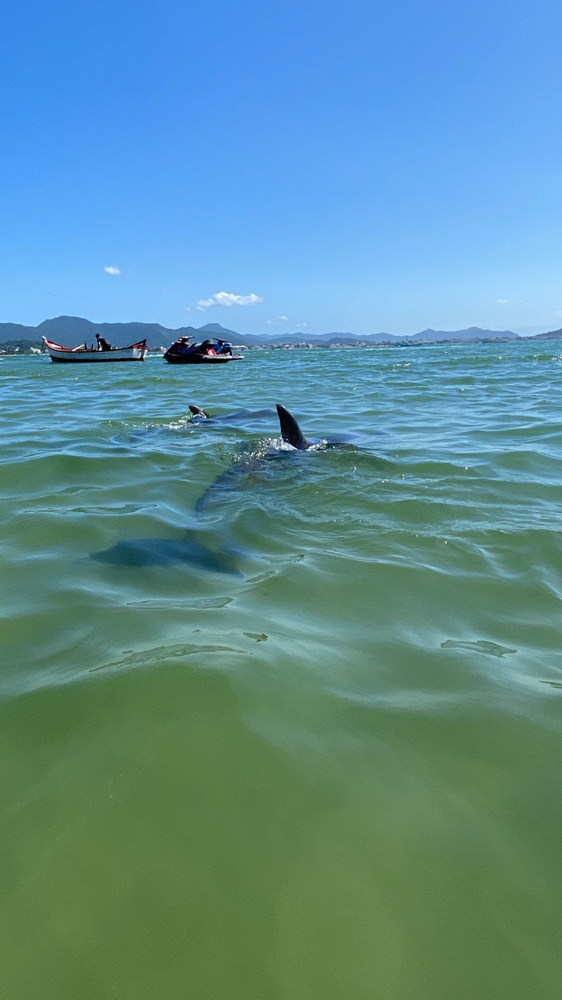
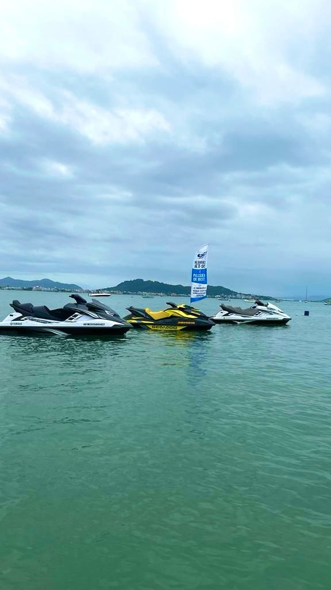
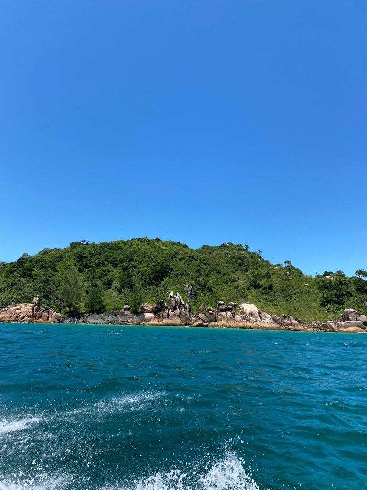

PONTA DAS CANAS
A praia de Ponta das Canas tem uma água muito tranquila, quase sem ondas, e temperatura agradável. É o local ideal para quem busca uma praia para crianças ou para quem deseja se hospedar próximo ao mar e poder curtir uma praia com facilidade. A "ilha da magia" fica localizada no norte da ilha, Conhecida por ser uma praia tranquila e muito famosa pelos esportes náuticos que nela tem.